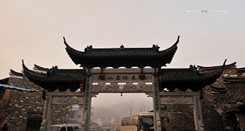

“红色旅游”能否为衢州旅游业“添把火”

今年是“中国旅游年”，“红色旅游”为国家旅游部门
大力倡导。衢州“红色之旅”名列《2005年“中国旅游年”浙江省活动方案》8个
重点旅游线路之一，那么—— “红色旅游”能否为衢州旅游业“添把火”？
衢州“红色之旅”线路包括了烂柯山、孔氏南宗家庙、开化南华山、龙游鸡鸣
山、衢江区灰坪革命根据地和江郎山伟人峰等7个景点。该线路景点多为爱国主义
教育基地，其中灰坪乡至今仍保存着较为完整的当年红军驻扎根据地遗迹：1935年
1月，方志敏同志英勇就义前，曾在开化南华山吟诗道：“雪压竹头低，低下预占
泥；一朝红日起，依旧与天齐。”
“具有革命历史教育和文化意义的‘红色旅游’有较大的经济效益，我市除了
本省的市场优势外，还有上海这个大市场。”3月9日，市旅游局市场处人士介绍，
我市已与上海旅游部门挂钩推介。
来自江山市旅游局的统计，“红色旅游”是该市新春游的一个热点，仅春节期
间，就有500多人到当地双溪口乡中共江浦县委旧址以及井冈山、瑞金等景点参观
。
“相对于江西、陕西等地的知名景点，我市大多‘红色旅游’景点还不够成熟
，可进入性较差，像龙游鸡鸣山、衢江区灰坪革命根据地和江山伟人峰3个中，只
有伟人峰在江郎山景区，景点较为成熟。”市旅游局人士相告，颇具影响力的红军
标语石刻位于灰坪乡西坞村，纪念碑又在上坪田村，其中红军标语石刻距离乡政府
有近10公里的山路，走路需要2、3个小时。如果要乘车进入，两个“红色旅游”景
点都需绕道上方镇仙洞方向。
灰坪乡政府综合办一位曾姓负责人说，往年平均每年约有500来人前来红军根
据地参观，今年人数明显增多。“但这些景点开发还比较粗，只在上个世纪八九十
年代修了路、立了纪念碑，当然我们这里还有大麦源原始次生林，还有红军松，也
是可以发展旅游的。”
“衢州应该借‘红色旅游’热的东风，进一步联进江西、福建，进而做大做强
。”衢州“国旅”一位负责人认为，衢州“红色旅游”资源不可能和相邻的江西省
相比，但是上海、苏锡常以及我省杭州的旅游消费主力，衢州是西行的必经之地，
打好这张牌，给我市旅游业“添把火”应该不成问题。（记者 王继红）
新闻链接：1995年，井冈山市就提出“红色摇篮、绿色宝库”的宣传口号。衢
州身边的另一个成功的近例是福建上杭县，该县以“古田会议”会址为核心，打造
“红色旅游基地”，将宝贵的红色资源与丰富的绿色资源、独特的客家文化资源和
珍稀的紫金山黄金工业旅游资源结合，形成以“红色”为龙头，“绿色”“金色”
“古色”相辉映的旅游格局。去年该县共接待游客增长35%，旅游收入首次突破亿
元大关。